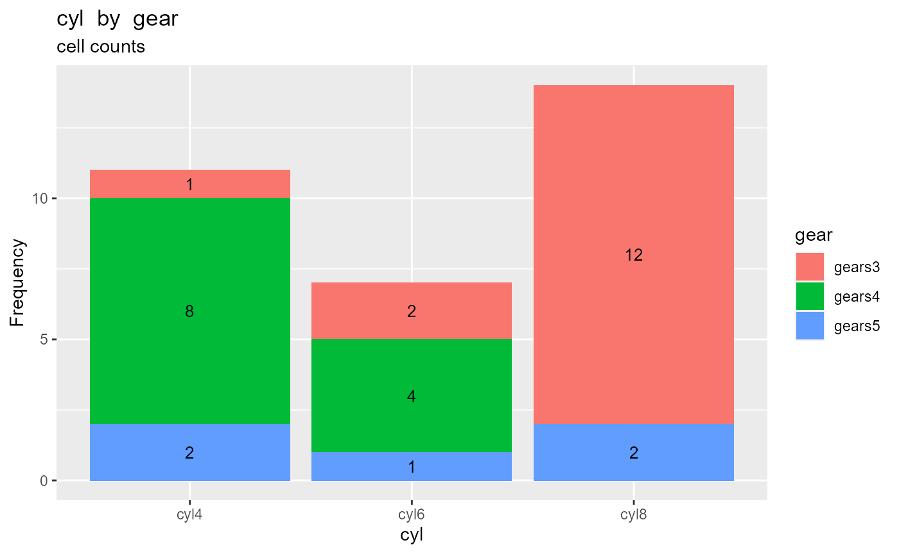
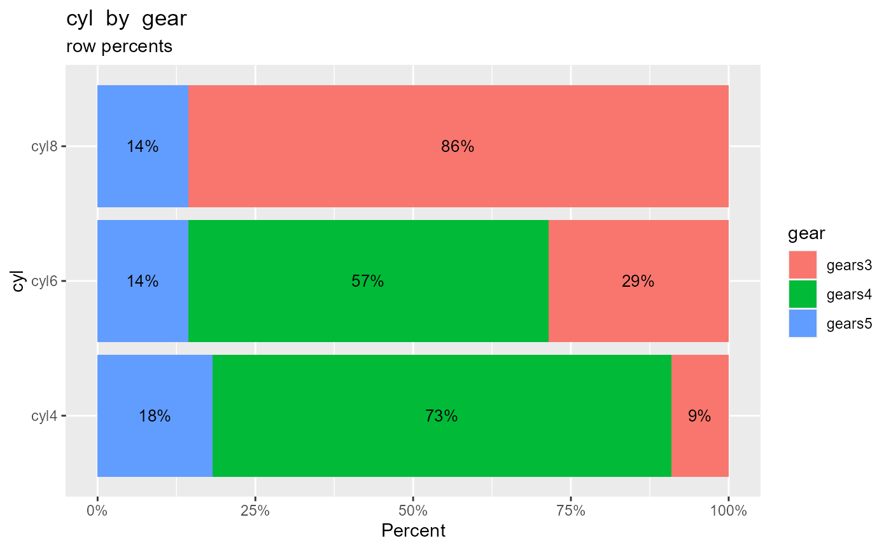
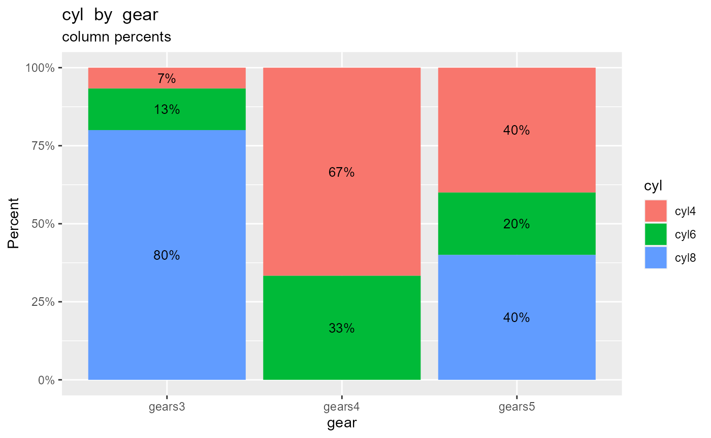
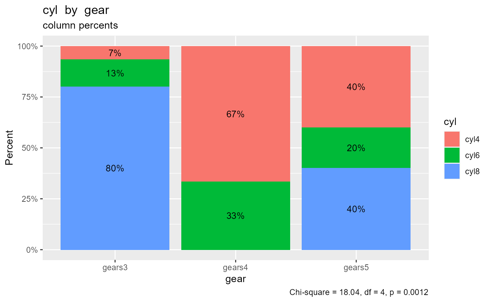

The crosstab function calculates and prints a two-way frequency table.
Given a data frame, a row variable, a column variable, and a type (frequencies, cell percents, row percents, or column percents) the function returns a table with
- labeled rows and columns
- frequencies or percents
- a level labeled <NA> for missing values (if
na.rm = FALSE)
- a level labeled Total (unless
total = FALSE) - a Chi-square test of independence (if
chisquare = TRUE)
Tables are printed with 2 decimal places for percents (modifiable using digits=#). Variables are coerced to factors if necessary. Adding plot=TRUE produces a ggplot2 graph instead of a table.
In the examples below, the number of car cylinders (cyl) is cross-tabulated with the number of gears (gear) for 32 automobiles in the cars74 data frame.
Frequencies
By default, the crosstab function reports frequency counts for each combination of the two categorical variables. The most common car type has 3 gears and 8 cylinders.
crosstab(cars74, cyl, gear)
#> gear
#> cyl gears3 gears4 gears5 Total
#> cyl4 1 8 2 11
#> cyl6 2 4 1 7
#> cyl8 12 0 2 14
#> Total 15 12 5 32
crosstab(cars74, cyl, gear, plot=TRUE)
Cell percents
Cell percents add up to 100% overall all the cells in the table. 25% of all cars in the data frame have 4 gears and 4 cylinders.
crosstab(cars74, cyl, gear, type="percent")
#> gear
#> cyl gears3 gears4 gears5 Total
#> cyl4 3.12% 25.00% 6.25% 34.38%
#> cyl6 6.25% 12.50% 3.12% 21.88%
#> cyl8 37.50% 0.00% 6.25% 43.75%
#> Total 46.88% 37.50% 15.62% 100.00%
crosstab(cars74, cyl, gear, type="percent", plot=TRUE)
Row percents
Row percents sum to 100% for each row of the table. 86% of 8 cylinder cars have 3 gears.
crosstab(cars74, cyl, gear, type = "rowpercent")
#> gear
#> cyl gears3 gears4 gears5 Total
#> cyl4 9.09% 72.73% 18.18% 100.00%
#> cyl6 28.57% 57.14% 14.29% 100.00%
#> cyl8 85.71% 0.00% 14.29% 100.00%
crosstab(cars74, cyl, gear, type = "rowpercent", plot=TRUE)
Column percents
Column percents sum to 100% for each column of the table. Only 7% of 3 gear cars have 4 cylinders.
crosstab(cars74, cyl, gear, type = "colpercent")
#> gear
#> cyl gears3 gears4 gears5
#> cyl4 6.67% 66.67% 40.00%
#> cyl6 13.33% 33.33% 20.00%
#> cyl8 80.00% 0.00% 40.00%
#> Total 100.00% 100.00% 100.00%
crosstab(cars74, cyl, gear, type = "colpercent", plot=TRUE)
Chi-square test of independence
You can include a test that the two categorical variables are independent, by adding the option chisquare = TRUE.
crosstab(cars74, cyl, gear, type = "colpercent", chisquare=TRUE)
#> gear
#> cyl gears3 gears4 gears5
#> cyl4 6.67% 66.67% 40.00%
#> cyl6 13.33% 33.33% 20.00%
#> cyl8 80.00% 0.00% 40.00%
#> Total 100.00% 100.00% 100.00%
#>
#> Chi-square = 18.04, df = 4, p = 0.0012
crosstab(cars74, cyl, gear, type = "colpercent", plot=TRUE,
chisquare = TRUE)